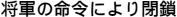

Chương 25

“Anh phải mau rời khỏi đây thôi!”, Hana hoảng hốt nắm tay Jack.
“Quá muộn rồi”, nó chán nản đáp, cơ hội bỏ trốn đã trôi qua từ lâu.
Băng Bọ Cạp nhanh chóng áp sát. Lúc chúng đến quảng trường thì bất ngờ bị chắn ngang bởi một người đàn ông say rượu. Người này va trúng quầy đồ chơi khiến những con bông vụ gỗ xoay tít khắp đường. Quang cảnh hỗn loạn nổ ra. Ronin loạng choạng túm Kazuki để giữ thăng bằng. Kazuki giận dữ xô Ronin ra làm bình rượu trên tay đập luôn vào mặt Nobu. Goro và Hiroto vội vàng tiến tới định đuổi vị võ sĩ rắc rối kia đi nhưng lại ngã lên ngã xuống với đám bông vụ bên dưới.
“ Sin lũi”, Ronin làu bàu lùi đi, rượu vung vẩy khắp mọi nơi.
Bất thình lình chủ quán nước lại gần bàn Jack và Hana. “Lối này”, ông dẫn đường cho chúng rời khỏi khu vực nguy hiểm.
Không còn sự lựa chọn nào khác, hai đứa đi theo vào bếp rồi thông ra lối hậu.
“Làm ơn nói với Ronin đến tìm tôi ở phía nam thành Nijo”, Jack vội vàng nói. “Và cảm ơn ông đã giúp đỡ”.
“Con chiên của Chúa phải biết giúp đỡ lẫn nhau”, chủ quán thì thầm.
Jack sững sờ trước thông tin vừa ghi nhận. Shogun đã ra lệnh bài trừ không chỉ người nước ngoài, mà cả người theo đạo Kito nữa. Rõ ràng người này đã vô cùng mạo hiểm khi ra tay giúp đỡ nó, cái giá phải trả có thể là rất đắt.
Chủ quán cẩn thận nghe ngóng xung quanh rồi làm dấu thánh giá. “Cầu Chúa phù hộ cậu”.
“Cầu Chúa phù hộ ông”, Jack cảm động.
“Nhanh lên nào!”, Hana hối thúc.
Thế là hai đứa lén lút trốn khỏi Kyoto hướng về phía thành Nijo. Jack những mong nó sẽ gặp được Lãnh chúa Takatomi và cô Emi con gái lãnh chúa để tạm nương nhờ chỗ họ. Thế nhưng khi đến gần nó mới biết đây là một sai lầm ghê gớm.
Quân lính canh phòng cổng chính cũng như tường thành không hề mang gia huy hình hạc trắng của Lãnh chúa Takatomi, mà là gia huy mặt trời đỏ của cha Kazuki - Oda Satoshi. Có lẽ công lao trong trận chiến vừa qua đã cho cha con họ được tướng quân ban thưởng cho quyền cai quản địa hạt Kyoto này.
Jack tự rủa mình ngu ngốc. Thay vì là nơi gặp nhau lí tưởng, giờ đây thành Nijo đã trở thành khu cấm địa hung hiểm nhất.
“Chúng ta đi tiếp thôi”, Jack nói với Hana sau khi giải thích tình hình.
Không hề có mục tiêu, Jack cứ lầm lũi cúi đầu đi theo bản năng. Hai đứa cứ thế vòng lại, đi qua một con đường lớn rồi dừng lại.
“Giờ tính sao?”, Hana lên tiếng.
Jack ngẩng đầu nhìn lên và suýt tí nữa thì khuỵu luôn cả gối xuống. Ngay trước mặt nó là cánh cổng bằng gỗ đen bao quanh bởi tường trắng. Gia huy phượng hoàng lửa dù đã bị gãy cánh nhưng vẫn rất uy nghiêm.
“ Về đến rồi”, Jack thở hắt, nước mắt trào ra, đầu ngập tràn cảm xúc.
Trong vô thức, chân nó đã tự động bước về trường Nhị Thiên Nhất Lưu.
“Anh vẫn ổn chứ?”, Hana lo lắng.
Jack nén dòng suy nghĩ khẽ gật đầu. Nó chậm chạp bước đến bên ngoài cánh cổng. Nước sơn cũ kĩ loang lổ những vết bẩn. Jack lần ngón tay theo những chữ Hán tự được khắc vào tấm biển gỗ treo bên ngoài.

“Họ viết gì vậy?”, Hana tò mò hỏi.
“Ừm...”, Jack lục lọi trong bộ nhớ những bài học ngày trước Akiko đã dạy. “Nhân danh Shogun. Đóng cửa”.
Nó đưa mắt nhìn qua khe hở. Bên trong vẫn là ngôi trường thân quen với vườn hoa ở giữa, Vũ Đức Điện nơi võ sinh tập kiếm thuật và thể thuật. Bên phải là thang đá dẫn đến Phật Điện của thiền sư Yamada, bên trong có chứa chuông đồng kích thước khổng lồ.
Ngay sau Phật Điện, Jack lờ mờ nhìn thấy phần ngói nâu đỏ của Điệp Trùng Đường, đặt tên theo trang trí hình con bướm và anh đào ấn tượng. Sâu bên trong là phòng riêng kiêm võ đường của thầy Masamoto, Phượng Hoàng Đường, nơi số ít võ sinh được chọn truyền tuyệt kĩ Nhị Thiên. Ngay cạnh đó tọa lạc Nam Thiền Viên và Sư Tử Đường, chỗ ngủ nghỉ của võ sinh toàn trường...
Jack nhắm mắt. Mọi thứ vẫn nguyên vẹn như những năm về trước.
Thế rồi nó dần nhận ra mình đã bị chính kí ức đánh lừa. Sân vườn hoang phế đầy cỏ dại, lá cây rơi đầy các góc. Cổng vào Phật Điện trật bản lề, Phượng Hoàng Đường - toà kiến trúc Kazuki châm lửa phá hủy - nằm cạnh Vũ Đức Điện như một hầm mộ. Sư Tử Đường cũng chỉ còn lại duy nhất một bên tường xiêu vẹo sắp đổ.
Tĩnh mịch không một bóng người. Võ sinh không. Võ sư không. Sự sống không.
Chỉ mong sao nơi đây chưa bị bỏ hoang hẳn, Jack thầm cầu nguyện.
“Chủ quán nước nói đi về phía nam thành Nijo. Nhưng đây là hướng đông mà!”, Ronin bực tức cằn nhằn.
Jack quay phắt lại, nửa bất ngờ nửa nhẹ nhõm. “Ông không bị bắt à?”
“Tôi làm bộ say xỉn cản đường chúng. Và đó không thể tính là tội... được”. Vị võ sĩ nhìn nó bằng cặp mắt tinh anh tỉnh táo, rõ ràng việc xảy ra trước đó chỉ là một màn kịch. Ronin quan sát xung quanh. “Mau đi thôi. Đám nhóc đó đang đuổi đến đấy”.
Ba người rẽ vào lối đi đầu tiên họ nhìn thấy, Ronin dẫn đường xuyên thành phố vào một khu dân cư yên tĩnh. Họ tiếp tục đi về hướng bắc, cố ra vẻ bình tĩnh tránh đánh động nghi ngờ.
“Thế, chúng là ai vậy?”, Ronin hỏi.
“Cầm đầu là Kazuki”, Jack đáp, chỉ nhắc đến kẻ phản bội này thôi cũng đủ khiến nó buồn nôn. “Đồng môn cũ. Một tên lừa thầy phản bạn”.
“Và rất nguy hiểm. Ánh mắt hắn hiện rõ điều đó. Bọn còn lại thì sao?”
“Đều thuộc băng Bọ Cạp cả. Mục tiêu của chúng là săn cùng giết tận toàn bộ người ngoại quốc giống như tôi”.
“Tên gầy nhom chính là metsuke lúc ở quán nước đấy”, Hana cung cấp thông tin.
“Vậy thì đúng rồi”, Ronin nhận xét. “Bọn chúng nghi ngờ Jack là người ngoại quốc, nhưng vẫn còn tranh luận có đúng thực là đối tượng cần tìm hay không”.
“Chúng ta phải rời khỏi Kyoto thôi”, Jack kết luận, thành phố này chẳng khác nào thòng lọng treo trên cổ nó. “Nếu Kazuki cho rằng tôi đã đến đây thì hắn sẽ sẵn sàng xới tung mọi thứ lên để tìm cho bằng được đấy”.
“Thủ đô là nơi rất rộng lớn”. Ronin trấn an. “Với cả - chúng ta không cần phải ở lâu. Vì tôi tìm thấy Matagoro Araki rồi”.
“Thật không?”
“Cứ đi rồi biết”, Ronin đáp. “Cũng lưu ý luôn rằng hắn vốn là môn đồ của ngôi trường danh tiếng - Liễu Sinh Lưu đấy nhé”.